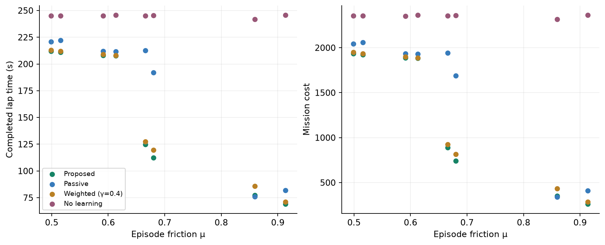
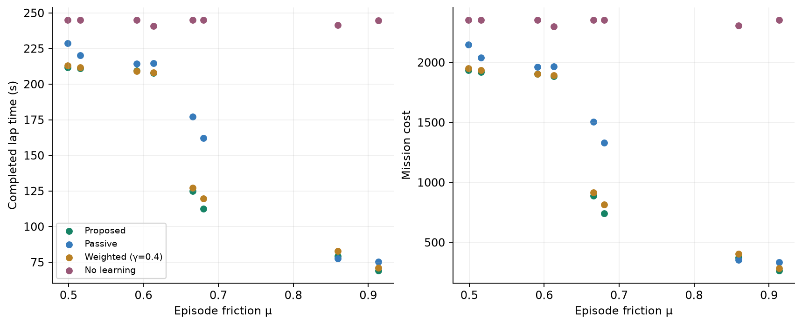

MPPI / SAMPLED DRS
Executed comparisons and baseline weight sensitivity
Proposed is a single method with a fixed strongly informative objective (γ = 2). Only the weighted baseline has a weight sweep.
Interactive replays · All experiments, including the 1,000-trial study · Demonstration CSV · Every validation episode · Scope and reproducibility · Method · LaTeX table · Download figures and tables
Paired validation trials
8 IID friction draws, shared across methods and both tolerances: 64 full-lap attempts. Weighted uses γ = 0.4 in this study; the separate reference sweep varies its weight. Completion denominators and every failure are retained. These small-sample episode bounds do not validate a 1% or 5% whole-lap guarantee.
Every completed validation lap
Each point is one friction draw. The two tolerances use the same draws; incomplete outcomes remain in the table above.
1% candidate tolerance

5% candidate tolerance

Independent certificate checks
The first and highest-speed accepted commitment for proposed, passive and weighted are replayed with their original certification samples, then checked with 10,000 fresh friction draws each. These are conditional-policy diagnostics.
Counts and seeds